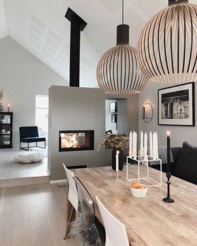
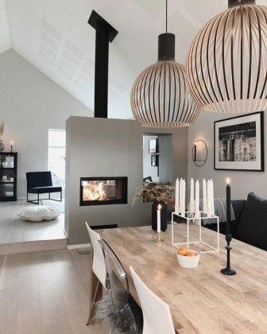
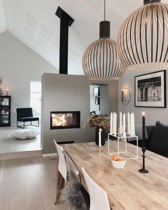
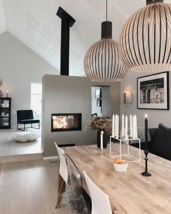

Основательность, педантичность и соблюдение приличий – примерно такие ассоциации вызывает у нас английский быт. Английский стиль в интерьере означает, что конструкции играют не меньшее значение, чем обстановка, в первую очередь – стены. Однако доминировать они не должны, гармония в атмосфере английского дома особенно важна.
Современные материалы открывают огромные возможности для полноценной стилизации под английские вкусы: деревянные панели с красивой текстурой и весьма умеренным декором, тяжелые обои с густым плотным рисунком и рельефом, объемные карнизы и пилястры. Уместная как общая палитра стен, так и разбивка их на три сектора, каждый из которых выполнен в различном ключе: например, сочетание зеленой, терракотовой и охристой драпировок. Обои могут быть «в полосочку», а также с небольшими геральдическими символами.

Незыблемое правило устройства интерьеров в этническом стиле – культуру, взятую за основу наполнения утилитарного пространства, нужно действительно любить, в противном случае экзотические мотивы очень скоро вас утомят. Кроме того, экзотические стили нежелательно разбавлять присутствием предметов иного исполнения, даже если необходимы или весьма вам дороги. Изначально решим – полностью ли мы воспроизводим африканский колорит либо лишь привносим его элементы в стиль ар-деко и т.д.
Африканский стиль в интерьере гротескнен как «черный реп» и африканские маски. С одной стороны, интерьер динамичен, с другой – он по-своему минималистичен и грубоват, выстроенный на контрастах ярких цветов и кажущейся примитивности декора.
Любителям восточной материальной культуры, не отдающим предпочтение конкретной стране, особенно подойдет восточный стиль в интерьере, сочетающий элементы самобытных восточных, азиатских и северо-африканских народов.
Как объединить японские, китайские, индийские, египетские мотивы? Владельцу апартаментов здесь предоставляется широкое поле деятельности, ограниченное лишь собственным вкусом. Однако обязательные условия: восточные материалы – дерево, бамбук, тростник, металл, шелк, восточные цвета – насыщенные и яркие, восточные формы – ломано-ажурные на фоне прямых линий, восточная отделка – инкрустации, резьба, лак, орнаменталистика, стразы и камешки.
Психология викингов изначально была ориентирована на надежность и добротность среды обитания, что, конечно же, отразилось и в интерьерах. Поэтому скандинавский стиль в интерьере – это функциональные деревянные конструкции, облагороженные умеренным декором, лаконичная природная красота материала, самобытность оформления стен и потолка, сочетающего простоту и контрастность.
Интерьер, выдержанный в скандинавском стиле, необязательно должен выглядеть суровым, особенно, если это спальня или кухня. Умеренность декора не означает отсутствие интересных сочетаний и форм.
Японская культура, притягательная до магнетизма, несмотря на ее «самурайскую» суровость, – предлагает весьма стильный взгляд на интерьер жилых помещений. Японский стиль в интерьере – это функциональность вкупе с театральностью, и одновременно – никаких проявлений в обстановке личностных черт хозяина. Японское пространство зонируется, используется и воспринимается в совершенно иных, отличных от европейских координатах. Вы можете воспроизвести японский интерьер в чистом виде, иначе говоря, устроить места для сна и приема пищи на полу, а можете ограничиться стилизацией, объединив японские черты с привычными удобствами.
Высокая мебель в японском интерьере исключена, даже если это всего лишь стилизация. Приемистая кровать на низких ножках (высотой с две-три книги, положенные друг на друга), короткие банкетки и скамеечки, низкие столики для кофе. Вариант устройства кровати – матрац, уложенный на подиум. Подушки тоже можно себе позволить, хотя большинство японцев обходится без них.
Русский стиль в интерьере – отнюдь не стилизация под сувенирную лавку с посудой кустарного изготовления, печными изразцами, деревянными кружевными наличниками и матрешками с хохломой. Наоборот, профессиональные дизайнеры всячески стремятся избежать витрин с выставленными напоказ самоварами и утюгами,– разумеется, такая витрина может быть, если хозяин – увлеченный коллекционер предметов старины, однако в этом случае необходимо стильное зонирование, отделяющее «музей» от обычного жилого пространства.
Условно русский стиль можно разделить на три направления – стиль «а-ля рюс», который радует глаз разве что иностранца и который являет собой именно нагромождение русской этники. Второе направление – «Русская изба», это своего рода минимализм, где нет лишнего, однако бытовые предметы ажурно декорированы, а в облицовках использованы дорогие породы дерева, обработанные согласно инновационным технологиям. Однако такое решение подходит для загородного дома, а вот для городской квартиры уместнее направление «терем», иными словами – городской русский стиль, который ориентируется на вкусы состоятельных мещан времен Чехова, умело сочетающих русскую традицию и европейские «диковинки».

Вернуться на главную